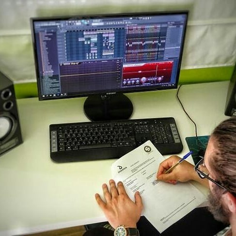
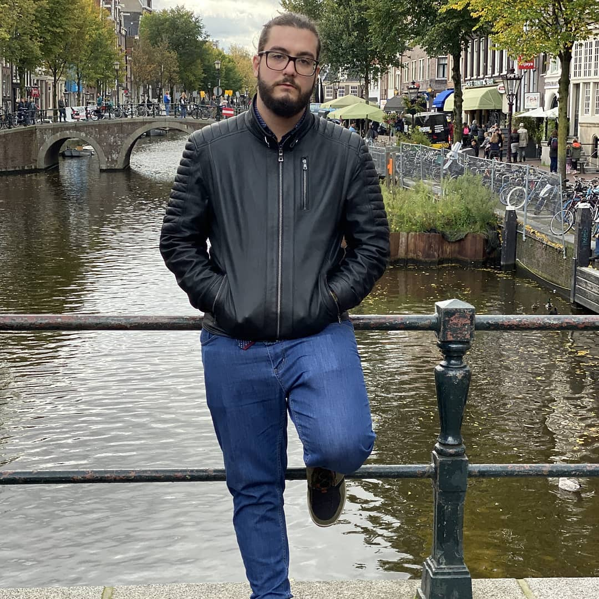
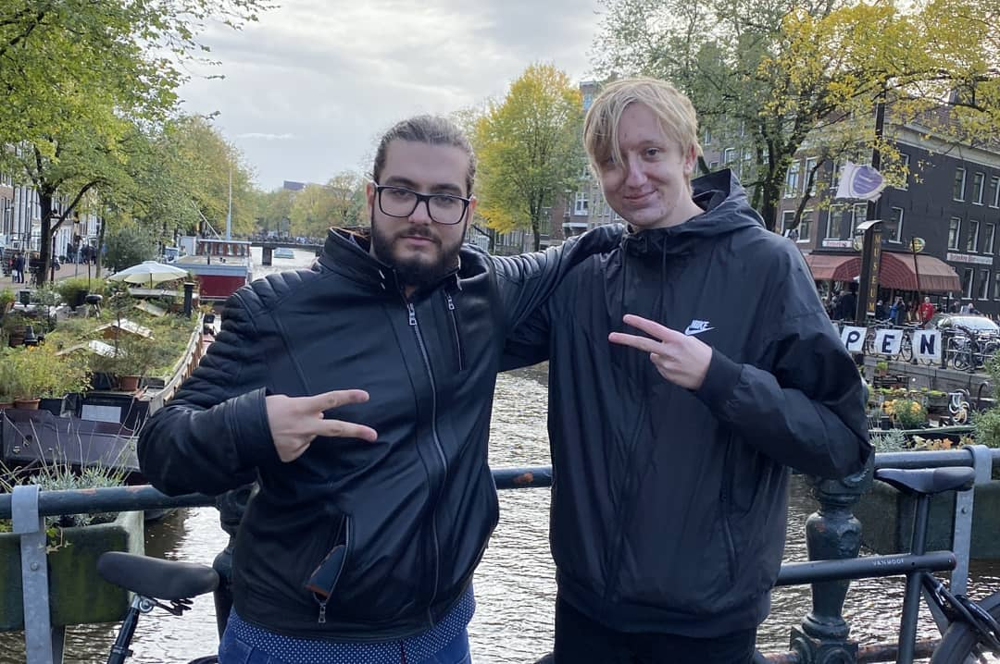
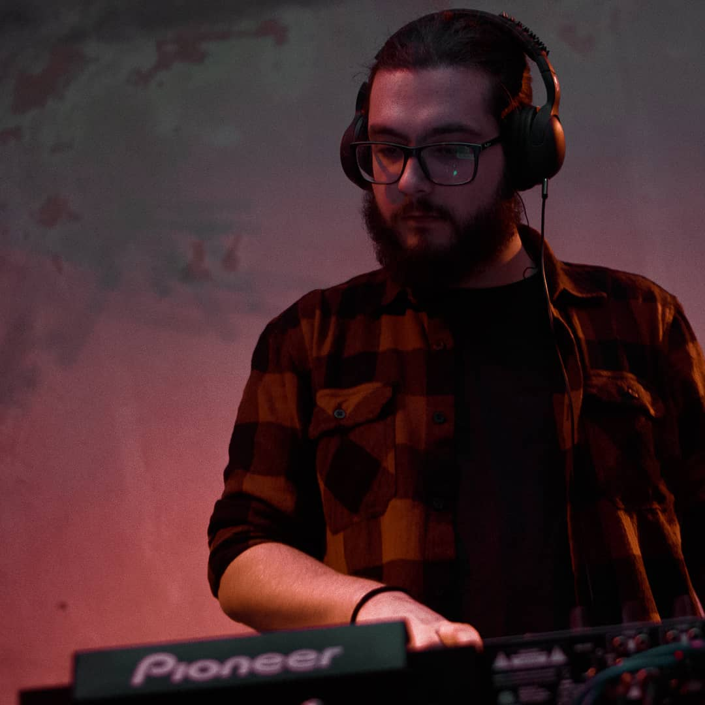
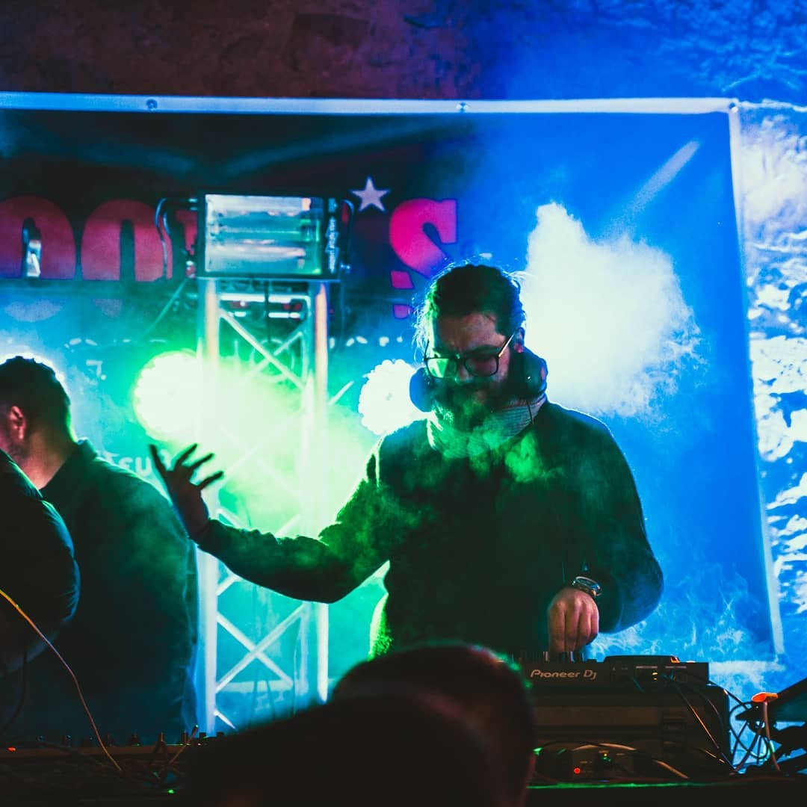

dJournal Entries
dJournal Entries

Success Story!
First track signed
I just signed my first track on a major record label, Spinnin Records. I am super proud of this!
This song is about the jungles of Myanmar, hence I named the song "MYANMAR". My dream is starting to take flesh and bone.

Amsterdam Dance Event
We have arrived!
I just arrived in Amsterdam to attend the Amsterdam Dance Event (ADE). I will be playing a show in front of 1500 people.
I will also be meeting a lot of interesting individuals, make connections and talk about music production and djing with people from the industry.
It's going to be great!

KRISM
The MYANMAR bros
I've just met my very good friend from Sweden Christoffer Nelson. Christoffer is a good partner of mine and we made MYANMAR together.
We will attend a lot of live shows together and I will be seeing him perform live in his show.

DJ
Epic Christmas live show
Last night I played on a Christmas live show. It was a gret experience. I played a lot of good music from all different genres, Techno, House and EDMM.
It was an epic experience and I wish to repeat it soon.

New Year, Good Year
Best set of my life
I had the chance to perform on a New Year's Day show in Kozani in front of a lot of people. I played some of my own songs and the audience received them very well.
That makes me really happy and motivated for the future! Can't wait for more.